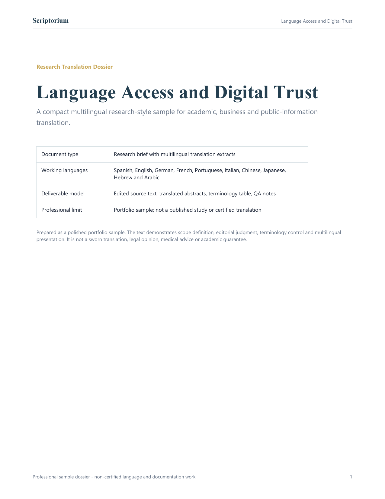
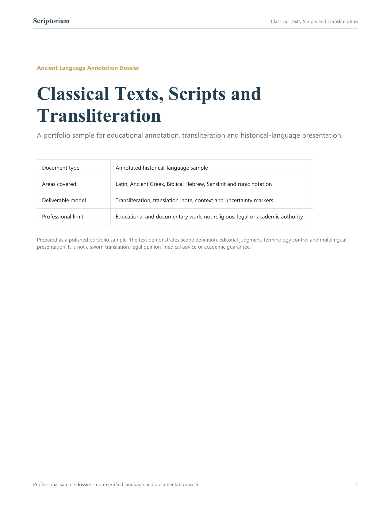
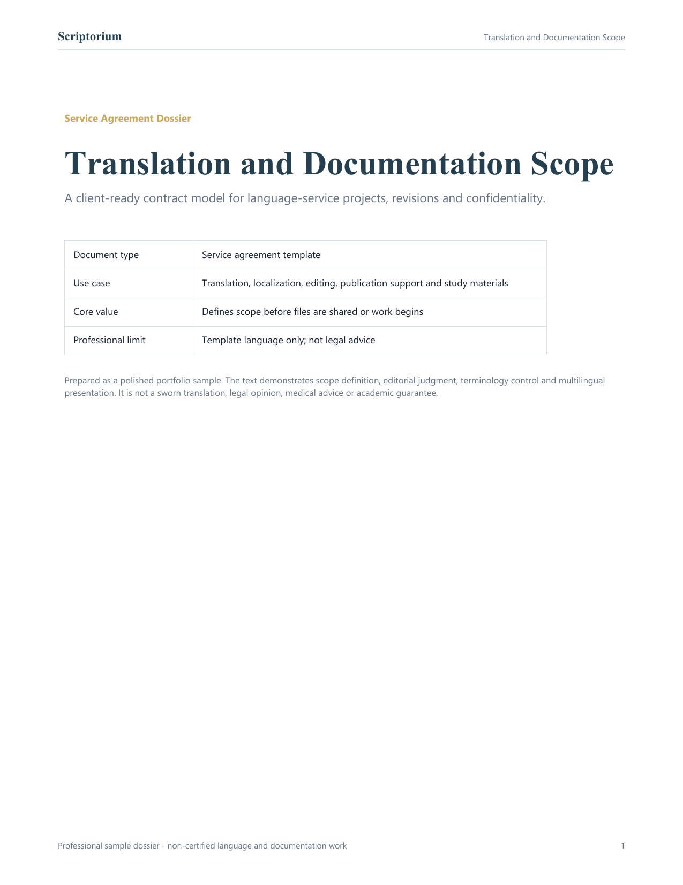

Core Working Languages
Spanish, English, German, French, Portuguese and Italian.
Translation, localization, editing, academic and business documents.Estudio profesional de idiomas
Precision Across Languages
Traducción, localización, documentación académica, textos antiguos y contratos de servicio para proyectos que necesitan claridad antes de entregar.
Qué es Scriptorium
Scriptorium funciona como un estudio de idiomas con enfoque documental: recibe proyectos por encargo, prepara acuerdos de alcance, publica materiales de muestra, enseña fundamentos lingüísticos y muestra competencia en idiomas modernos y lenguas antiguas sin parecer una página genérica de freelancer.
Language Desk
This structure lets Scriptorium look broad without overpromising. Core languages can be offered commercially; extended languages can appear in portfolio and reviewed projects; historical languages are presented as annotated study and documentation.
Spanish, English, German, French, Portuguese and Italian.
Translation, localization, editing, academic and business documents.Russian, Czech, Chinese, Japanese, Hebrew and Arabic.
Portfolio samples, reviewed projects, layout checks and multilingual documentation.Latin, Ancient Greek, Biblical Hebrew, Classical Arabic, Sanskrit, Old Norse and runic scripts.
Annotated samples, transliteration, teaching notes and historical-script files.| Area | Languages | Use | Client promise |
|---|---|---|---|
| Core | ES, EN, DE, FR, PT, IT | Commercial service | Quote-ready |
| Extended | RU, CS, ZH, JA, HE, AR | Portfolio and reviewed work | Scope review first |
| Historical | LA, GRC, HE, AR, SA, NON, Runes | Study and annotation | Educational, non-certified |

Servicios disponibles
Cada servicio se presenta como trabajo documental profesional: alcance, entregables, confidencialidad, revisión y límites definidos antes de iniciar.
Textos académicos, empresariales, web, marketing y documentos generales con revisión humana.
Por cotizaciónInterfaces, landing pages, fichas de producto, centros de ayuda, textos de app y adaptación SEO.
Por cotizaciónResúmenes, propuestas, revisiones bibliográficas, capítulos, respuestas editoriales y anexos.
EspecializadoMuestras anotadas, transliteración, notas de escritura y explicaciones educativas de textos históricos.
EspecializadoArtículos, publicaciones bilingües, notas terminológicas y documentos PDF con presentación profesional.
Por proyectoGuías de estudio, vocabularios, notas de pronunciación, mini-lecciones y comparativos de idiomas.
Por proyectoPaquetes orientativos
Los precios finales dependen del idioma, extensión, especialidad, formato y urgencia. Esta guía ayuda a elegir el tipo de solicitud correcto desde el primer mensaje.
Documentos académicos, empresariales, artículos, páginas web y textos generales.
Cotización por palabra o proyectoLanding pages, UI, apps, e-commerce, productos digitales y textos de conversión.
Cotización por pantalla o loteResumen, revisión lingüística, glosario, formato y apoyo editorial para investigación.
Cotización por alcanceTransliteración, notas explicativas, muestras anotadas y material educativo comparativo.
Cotización por muestraArtículo breve, ficha informativa, infografía textual o publicación de portafolio.
Cotización por piezaDocumento base con alcance, entregables, revisiones, límites y confidencialidad.
Cotización por plantillaSoluciones por cliente
Las agencias fuertes no venden solo “traducción”; organizan la oferta por necesidad. Scriptorium puede atender distintos perfiles sin perder foco.
Resúmenes, propuestas, revisión lingüística, glosarios y apoyo editorial para textos académicos.
Traducción comercial, adaptación de tono, presentaciones, propuestas y documentación operativa.
Localización de interfaces, páginas de venta, mensajes de producto y contenido SEO multilingüe.
Transliteración, anotación, notas de contexto y materiales educativos sobre lenguas históricas.
Artículos breves, documentos de muestra, guías descargables y piezas educativas para portafolio.
Documentos base para definir entregables, revisiones, límites, confidencialidad y canales de entrega.
Cómo contratar
Todo proyecto empieza con alcance, no con improvisación. Así el cliente sabe qué recibirá, cuándo lo recibirá y qué queda fuera del servicio.
Indica tipo de servicio, idiomas, extensión, fecha deseada y formato del archivo.
Scriptorium revisa complejidad, especialidad, formato y expectativas de entrega.
Se confirma alcance, revisiones, confidencialidad y límites antes de iniciar.
Se entregan los documentos acordados con formato, terminología y notas cuando aplique.
Método Scriptorium
Este método convierte una solicitud informal en un proyecto con diagnóstico, criterios de calidad y entrega revisable.
Se identifica idioma, género, público, especialidad, formato, urgencia y riesgo de confidencialidad.
Se definen entregables, términos clave, nombres propios, registro, límites y rondas de revisión.
El contenido se trabaja por sentido, uso y contexto, no solo por equivalencia palabra por palabra.
Se revisan coherencia, terminología, tono, formato, legibilidad y cumplimiento del alcance acordado.
Se entregan archivos finales y, cuando aplique, notas de criterio, glosario o recomendaciones.
Confianza profesional
Los documentos privados se revisan solo dentro del alcance acordado.
Se revisan sentido, tono, gramática, registro y utilidad real del texto.
Se consideran títulos, tablas, listas, numeración y ritmo visual del documento.
Los términos repetidos, nombres propios y registros especializados se mantienen consistentes.
Se confirman idiomas, archivo, extensión, fecha y entregables antes de trabajar.
No se prometen servicios juramentados, asesoría legal, diagnóstico médico ni resultados académicos.
Catálogo de servicios
Estas líneas de servicio ayudan a que Scriptorium funcione como estudio lingüístico listo para contratar: cada oferta tiene promesa, público y tipo de documento definido.

Documentos académicos, empresariales y generales con terminología revisada.

Webs, apps, textos de producto y experiencia de usuario multilingüe.

Lenguaje de marketing adaptado por tono, intención e impacto cultural.

Naming, voz de marca, revisión cultural y copy bilingüe.

Redacción cuidadosa para salud, psicología e investigación.

Mesa de contratos
Scriptorium puede funcionar como una página lista para contratar: el cliente elige un servicio, envía archivo o brief, recibe confirmación de alcance y aprueba condiciones antes de la entrega.
Se define servicio, par de idiomas, campo del documento, extensión, fecha y formato de entrega.
Archivo traducido, edición, glosario, notas terminológicas, borrador editorial o material educativo.
Los documentos se manejan de forma privada. Se puede usar NDA o cláusula de confidencialidad.
Rondas de revisión, cambios de formato y solicitudes extra se separan del alcance inicial.
Traducción humana, localización, preservación de formato, glosario, checklist de calidad y maquetación documental.
Traducción juramentada, certificación judicial, asesoría legal, consejo médico, diagnóstico ni aceptación académica garantizada.
Plantilla de acuerdo
Scriptorium prestará servicios lingüísticos y documentales según el par de idiomas, formato, extensión, fecha de entrega y revisiones acordadas. Cualquier idioma adicional, urgencia, certificación, reconstrucción de formato o manejo confidencial debe confirmarse antes de iniciar.
Lenguas antiguas e históricas
Esta área le da a Scriptorium una identidad más profunda: latín, griego antiguo, hebreo bíblico, árabe clásico, sánscrito, nórdico antiguo y escrituras rúnicas pueden presentarse como muestras anotadas, transliteraciones, notas educativas y trabajo lingüístico comparativo.
Solicitar muestra anotadaFrases clásicas, textos breves, lemas y muestras de traducción anotada.
Fragmentos filosóficos, notas gramaticales básicas y comentario bilingüe.
Transliteración, notas de raíz, dirección de escritura y apoyo simbólico de lectura.
Muestras de prosa clásica, notas de escritura y contexto cultural cuidadoso.
Transliteración IAST, pasajes breves y anotaciones amigables para estudio.
Formas rúnicas, nombres, notas de transliteración y muestras históricas.

Muestras anotadas
Son demostraciones educativas concisas de cómo Scriptorium puede presentar trabajo lingüístico histórico.
Ver PDFTranslation: Life is short, art is long.
Note: A classical aphoristic structure useful for motto translation and commentary.
Transliteration: gnothi seauton.
Translation: Know yourself.
Transliteration: shalom.
Note: Peace, wholeness or wellbeing depending on context.
IAST: dharma.
Note: Duty, order, law or teaching depending on tradition and text.
Publicaciones e información
Las publicaciones hacen que Scriptorium se sienta vivo: ensayos breves, notas bilingües, terminología, comparaciones de idiomas y explicaciones sobre escrituras antiguas.
Posts on false friends, tone, register, translation decisions and why literal translation fails.
Short entries on Latin, Greek, Hebrew, Arabic, Sanskrit and runic writing systems.
How to prepare a document, define language pairs, request localization and protect confidentiality.
Guides about abstracts, thesis chapters, ethics submissions and journal-facing language.
Translation transfers meaning. Localization adapts the experience so a product, app or page feels native to a market.
View PDFSome messages cannot be translated literally because the goal is persuasion, memory and cultural impact.
View PDFHistorical scripts create authority when they are handled with context, humility and clear annotation.
View PDF View samplesVisual notes — tap any infographic to view full size


Teaching & Learning
This gives Scriptorium a second life beyond client work: teaching materials, downloadable guides, short courses and language-literacy resources.
 Guide
Guide
Meaning, tone, register, audience, formatting and cultural adaptation explained simply.
 Mini-course
Mini-course
Latin alphabet history, Greek script, Hebrew/Arabic directionality, Sanskrit transliteration and runes.
 Worksheet
Worksheet
Research verbs, connectors, abstract phrases, methodology language and discipline-specific tone.
 Workshop
Workshop
How a website, app or product page changes when it moves into another culture.
Visual notes — tap any infographic to view full size


Casos de uso
Esta capa convierte los servicios en escenarios concretos: el visitante no lee solo una lista, sino una respuesta a su problema.
Se revisa el objetivo académico, el resumen, la terminología, el registro y el formato de entrega.
Solicitar revisiónSe adapta mensaje, tono, llamadas a la acción, SEO básico y experiencia de lectura para usuarios reales.
Cotizar localizaciónSe puede preparar transliteración, traducción de muestra, notas de contexto y explicación educativa.
Ver enfoque antiguoSe estructura una publicación breve con versión bilingüe, glosario, diseño documental y archivo PDF.
Ver publicacionesSe ordena el alcance, los límites, las entregas y el mensaje inicial para llevarlo directo al chat.
Abrir FiverrSe prepara un alcance base con confidencialidad, revisiones, entregables y condiciones de uso del material.
Ver contratosCentro de recursos
Estos recursos pueden convertirse luego en PDFs, posts o publicaciones de portafolio. Por ahora funcionan como contenido útil y señal de autoridad.
Incluye idioma origen, idioma destino, formato editable, fecha deseada, público y notas de terminología.
La traducción conserva significado; la localización adapta uso, tono, interfaz y contexto cultural.
Archivo, extensión, idiomas, objetivo, urgencia, formato final y nivel de confidencialidad.
Separando traducción de muestra, transliteración, notas gramaticales, contexto y explicación educativa.
Terminología inconsistente, tono demasiado literal, citas mal preservadas y falta de objetivo editorial.
Un esquema base para reunir alcance, entregables, revisión, confidencialidad y fecha de entrega.
Portfolio Library
The portfolio is presented as a library of fictional documents. It proves structure, formatting, multilingual layout and professional handling.

Muestra editorial con resumen, terminología, fragmentos traducidos y control de calidad. Está pensada para que el cliente vea método, no solo un archivo descargable.

Documento de muestra para transliteración, comentario cultural y notas de incertidumbre. Evita usar alfabetos históricos como decoración sin contexto.

Modelo de acuerdo para cotizaciones, confidencialidad, entregables y revisiones. Da confianza porque explica cómo se protege el proyecto antes de iniciar.

Field: Psychology / Social Science
Languages: EN, ES, DE, FR, PT, Chinese, Arabic
Research sample with terminology control and multilingual presentation.

Field: Thesis documentation
Languages: EN to ES plus multiscript sample set
Chapter translation with headings, academic tone and preserved structure.

Field: Research synthesis
Languages: 12-language multiscript sample
Structured review language for academic sources, summaries and scholarly tone.

Field: Proposal / methodology
Languages: 5-language full translation sample
Proposal structure with objectives, methods and research register preserved.

Field: Health / psychology documentation
Languages: Multilingual sample set
Medical-academic wording sample for structure and terminology precision.

Field: Research ethics documentation
Languages: 12-language multiscript sample
Formal language for submissions, participant notes and institutional review contexts.

Field: Software / product experience
Languages: 12-language multiscript sample
UI and product-language sample with layout and script-direction awareness.

Field: Brand language
Languages: EN, ES, FR, DE, PT, IT
Framework for name screening, cultural fit and voice options.

Field: Marketing language
Languages: EN, ES, FR, DE, PT, IT
Persuasive copy adapted by intent, audience and brand voice.

Field: Client service terms
Languages: EN / ES
Bilingual template for scope, deliverables, revisions and confidentiality.

Field: Historical language study
Languages: Latin, Greek, Hebrew, Arabic, Sanskrit, Old Norse
Annotated samples with original text, transliteration and educational notes.
Founder
Scriptorium was founded as a language and documentation studio focused on precise, structured and culturally aware language work. With an academic background in psychology and a strong interest in modern and historical languages, Scriptorium combines research literacy, linguistic precision and professional document formatting.
Professional Limits
Scriptorium presents serious language services without making claims that require external certification.
All portfolio documents are fictional samples unless explicitly stated otherwise.
Ancient-language work is offered as study, annotation, transliteration or sample translation.
Medical and psychology documents are translation/documentation work, not clinical advice.
Legal and business documents are language services, not legal advice or sworn translation.
Confidential documents require agreement before upload or sharing.
Publication support improves language and format, but does not guarantee acceptance.
Términos básicos
Estos textos son una base profesional para orientar el servicio. Pueden ajustarse cuando exista dominio propio, pasarela de pago o formularios con carga de archivos.
Scriptorium presta servicios de traducción, localización, edición, documentación, publicaciones, materiales educativos y anotación de textos antiguos según el alcance acordado por escrito antes de iniciar cada proyecto.
Los documentos compartidos por clientes se tratan de forma reservada. No se recomienda enviar información médica, legal, académica o personal sensible sin acuerdo previo de confidencialidad y definición clara del uso del material.
Los datos enviados por correo, WhatsApp o Fiverr se usan únicamente para responder solicitudes, preparar cotizaciones y coordinar entregas. Scriptorium no vende datos personales ni los utiliza para fines ajenos al servicio solicitado.
Scriptorium no ofrece traducción juramentada, asesoría legal, diagnóstico médico ni garantía de aceptación académica o editorial. El trabajo es lingüístico, documental, educativo y de apoyo editorial.
Las muestras publicadas sirven para demostrar estilo, formato y capacidad lingüística. Nuevas investigaciones o traducciones de muestra deben publicarse como material educativo, con fuentes claras cuando corresponda y sin exponer documentos privados de terceros.
Cada cotización debe indicar idioma origen, idioma destino, extensión, formato, fecha de entrega y rondas de revisión. Cambios fuera del alcance inicial pueden requerir nueva cotización.
Preguntas frecuentes
Esta sección reduce dudas iniciales y ayuda a que la primera conversación por WhatsApp, correo o Fiverr llegue con mejor contexto.
El sitio organiza los idiomas por nivel de servicio: idiomas modernos de trabajo, idiomas extendidos bajo revisión y lenguas antiguas para anotación, estudio o documentación educativa.
Sí, pero primero conviene definir alcance, uso del material y condiciones de confidencialidad. No se recomienda enviar información sensible sin acuerdo previo.
No. Scriptorium ofrece traducción, localización, documentación y apoyo editorial, pero no certificación juramentada ni asesoría legal.
Depende del tipo de archivo, extensión, idioma y urgencia. Una buena solicitud debe incluir idioma origen, idioma destino, número aproximado de palabras, fecha deseada y objetivo del texto.
Las revisiones se definen en la cotización. Cambios dentro del alcance acordado pueden revisarse; cambios nuevos o ampliaciones pueden requerir una cotización adicional.
Sí. Para proyectos largos o especializados se puede solicitar una muestra breve, un glosario inicial o una nota de estilo antes de avanzar con el documento completo.
Solicitar servicio
Usa este formulario para traducción, localización, notas de lenguas antiguas, apoyo editorial, materiales educativos o acuerdos de servicio.